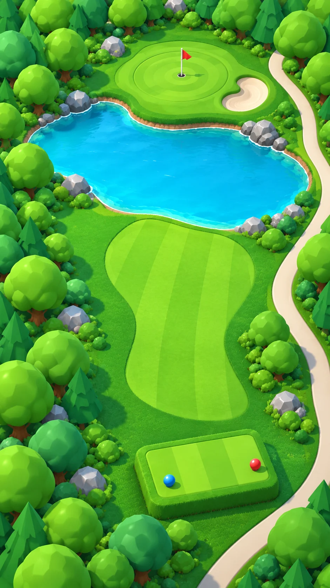

← TODOS NUESTROS MUNDOSGrow
UN PRIMER VISTAZO
Grow
Greens.
Un pequeño campo.
Una gran idea por hacer crecer.
Una mirada al universo visual de nuestro proyecto de golf y gestión.
Explorar el concepto ↓
LA DIRECCIÓN QUE IMAGINAMOS
Hay mucho por cultivar.
01
Un mundo que crece.
El punto de partida visual: un campo pequeño que invita a imaginar nuevos caminos, instalaciones y posibilidades.
02
Detalles con encanto.
Árboles redondeados, agua luminosa y caminos suaves. Un entorno amable que apetece recorrer.
03
Tu próximo gran plan.
Golf y gestión como premisa del proyecto. Llegará a iPhone y Android. Las mecánicas se concretarán a medida que avance el desarrollo.
Arte conceptual. Las imágenes y los textos de esta propuesta no anuncian funcionalidades ni fechas de lanzamiento.
HECHO EN FUENTEPATOS